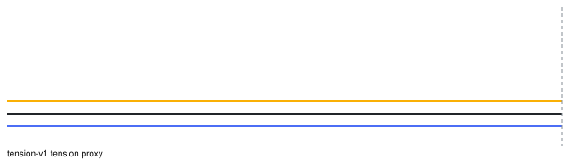
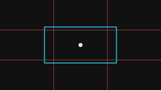

Measured
Deterministic function of pixels, samples, or probe facts. Unit and method version on every value.
Measurement instrument, not an aesthetic judge
A clip goes in. A versioned report comes out. Measured values are reproducible. Heuristic labels abstain when evidence is weak. Missing pillars are unavailable with a reason, never a fabricated zero.
This Netlify page is the public brief. It does not analyse video. The pipeline needs FFmpeg, Python 3.12, and (for the API) PostgreSQL. Clone the repository to run it.
Deterministic function of pixels, samples, or probe facts. Unit and method version on every value.
Thresholded labels such as lighting-key or framing. Confidence plus evidence. Not artistic intent.
Optional critic prose from compact metrics. Stored separately. Cannot modify or fail analysis.
Named reason: detector_not_installed, no_audio_stream, stage failure.


FastAPI control plane, PostgreSQL job truth, local poll worker, filesystem artifacts, Streamlit as an HTTP client. Spatial backends: none / fake. Critic: none / fake / OpenAI-compatible HTTP.
Celery + Redis transport. Compose API/CPU worker. GPU worker is a Compose profile and unused in the Apache-2.0 base install.
SAM 2, Triton, Ray, Kubernetes, NVDEC, Prometheus, Ollama SDK, vLLM, Ultralytics.
Host: macOS 13.5 arm64, Python 3.12.7, pipeline 0.1.0. Tiny FFmpeg fixtures, not 60 s 1080p film. RTF milli = wall_ms × 1000 / duration_ms (1000 ≈ real-time).
config hash 66dced8dd50901cdfea31549d1395668fcca7bbc425288c3b705fe342d6304b7
| Clip | Cold ms | Cold RTF‰ | Warm ms |
|---|---|---|---|
| two_color_cut | 1552 | 388 | 612 |
| no_cut | 469 | 117 | 468 |
| no_audio | 127 | 127 | 120 |
| tension_signals | 5372 | 1343 | 1010 |
Generated from the redistributable two_color_cut.mp4 fixture. Spatial is unavailable because the base install ships no person detector. Audio is unavailable because the clip has no audio stream. Those absences are the demonstration.
Loading sample report…
git clone https://github.com/edcou060/cinematography-analyzer
cd cinematography-analyzer
make bootstrap
make fixtures
make check
uv run cine-analyzer analyze fixtures/video/two_color_cut.mp4 --through report